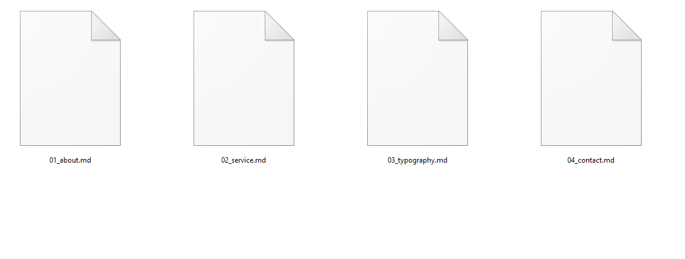
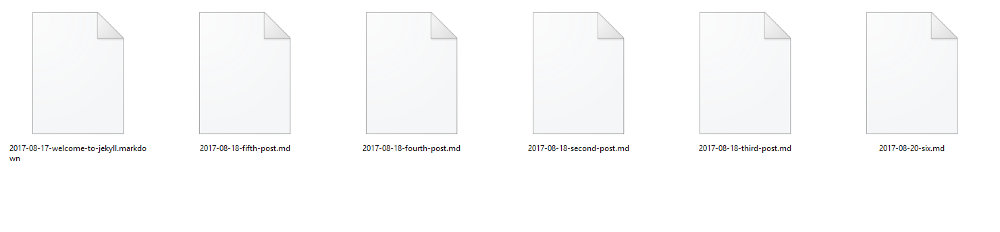
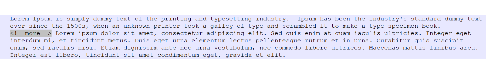
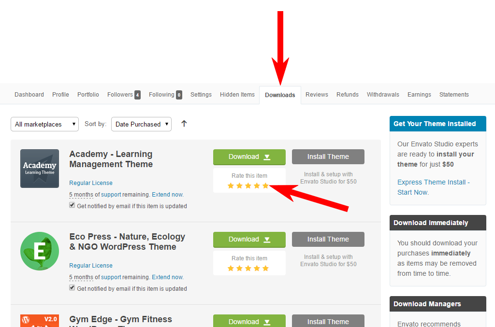

Tfolio - Personal Portfolio & CV / Resume Site Jekyl Template
Created: 27 Nov 17
Latest Update: 27 Nov 17
Version: 1.0
Recommended Jekyll Version : 3.5.X
By: themeix
Email : themeix@gmail.com
Thank you very much for purchasing our item.
We hope you have enjoyed the template’s live preview and you want to create such a beautiful website. Now, this documentation is everything needed for you to setup your perfect website. Please follow each instruction carefully, even single a line of code can do wonders (in all senses) so please don’t miss anything on this user guide
If you love our work please rate it on themeforest
It will NOT take even a couple of minutes for you to rate our template, but it will be a great motivation for our developers.
Please be aware of the legal validity of license type you have purchased.
We appreciate your purchase and we expect you have understood the different types of license and usage permissions. FYI, a Regular License should be used only for a single application (single website / single client project) on which your end-users are not charged for. If your end-users are being charged for the usage of your website (built with this template), then you have to buy Extended License from themeforest. For complete & precise information about licenses, please see: http://themeforest.net/ licenses
If you have any question, please feel free to contact us.
Read this before you edit anything
This template is an advanced Jekyll template powered by some modern features such as CSS3, HTML5 and AJAX to render the styles, colors, fonts and some additional visual enhancements. LESS and AJAX will work only from server side, means you have to upload all files to a real web hosting server in order to view proper colours and fonts rendering of this template. If you just test them from your local computer you will not be able to see proper colours or fonts, but this is not at all any errors. Please upload the template to a web server and edit it there.
1. Why this documentation is very important?
We are sure that we have covered all the essential instructions needed to setup a nice website as you see in our template’s live preview. We expect you to read this user guide before you open any support request (if you ask about things already present in this guide, you will be gently asked to read this again
2. If I need help, will you provide free support?
Yes, we have a dedicated support system where we offer free support even though providing support is not mandatory for themeforest authors. Our support is applicable only for issues and bugs within our product live previews (nonedited version of the template). We do NOT provide free customisation services in the scope of free support.
3. What kind of support are you providing?
We offer free support for our products where we can help you fix issues within our code (if any) and assist you on template setup (in some cases if the task is minimal). Please note support is not applicable for third party jQuery plugins and GPL code components (because they are not created or maintained by us). Also support is not applicable to issues or bugs happening on your edited version of the template. We are not offering any debugging service on your edited websites.
4. When can I expect a response from you?
Our team will be online during 08.30 to 17.30 on Monday – Friday (GMT + 6.00, Dhaka). For support request we usually make a response within 24 to 48 hours. Due to the complex nature of some queries, responses can’t be guaranteed a specific turn-around time, but we value each user and we will surely get back to you. In case if we experience heavy load of support tickets we will announce the status on Twitter.
5. If I need to customize this template will you offer it?
We are unable to provide free customisation services on our products. If you have great passion and considerable budget please open the request as a premium project, please email to: themeix@gmail.com If our developers are free we will get back to you via email.
6. How can I know about future updates and bug fixes?
We release updates regularly and we notify our users via Tweets as well as Email Newsletters (we do hate spam). We recommend you to subscribe to our update channels:
Get updates via Email: themeix@gmail.com
Get updates via Twitter: https://twitter.com/themeix_ltd
7. Do you offer refund / exchange for my purchased item?
We are not permitted to handle sales or marketing of our products as Envato solely handles it through themeforest websites (we are exclusive author having active contract with them). If you are looking for a refund or exchange on any of your purchased items from themeforest, please contact Envato support. Their decision will be final on all cases.
8. I am not sure about the License type I am having, what should I do?
We appreciate your purchase and we expect you have understood the different types of license and usage permissions. FYI, a Regular License should be used only for a single application (single website / single client project) on which your end-users are not charged for. If your end-users are being charged for the usage of your website (built with this template), then you have to buy Extended License from themeforest. For complete & precise information about licenses, please see: http://themeforest.net/ licenses
Directory & Installation
The following guide assumes you have some knowledge of the Jekyll platform, including setting up of its prerequisites and a suitable server environment. Further information on this can be found in the Jekyll Documentation.
How to install theme
- Login to your hosting environment via (S)FTP, or preferred file transfer method.
- 2Navigate to the directory you wish to install the blog. If you have an already existing Jekyll install its recommended to start a new blog, and transfer the files over to the new install.
- Copy the contents of 'JekyllX' into the newly created directory.
- Edit the _config.yml file, more information on the available options can be found in the Customization section of this document
Pages
If you don’t want file extensions (.html) to appear in your page URLs (file extensions are the default), you can choose a permalink style that has a trailing slash instead of a file extension. More details here, https://jekyllrb.com/docs/pages/ Posts
To create a new post, all you need to do is create a file in the _posts directory. How you name files in this folder is important. Jekyll requires blog post files to be named according to the following format:YEAR-MONTH-DAY-title.MARKUP
Example : 2011-12-31-new-years-eve-is-awesome.md2012-09-12-how-to-write-a-blog.md
 More details here, https://jekyllrb.com/docs/posts/
Theme Options
To configure this theme properly for your site please follow below instruction.
Configruration Settings (_config.yml)
# Site Settings
title : The title of your blog, shown in the page and description areas. email : Email address associated with the blog. description : Blog description which is shown within the index sidebar. baseurl : Base URL, more information can be found in the Jekyll documentation. url : Blog URL, more information can be found in the Jekyll documentation. paginate : Number of posts to show per page, more information can be found in the Jekyll documentation# Social Links
twitter_username : URL for the twitter, which will be shown at the footer facebook_url : URL for the facebook, which will be shown at the footer google_plus_url : URL for the google plus, which will be shown at the footer instragram_url : URL for the Instagram, which will be shown at the footer pinterest_url : URL for the pinterest, which will be shown at the footer web_url : URL for the website, which will be shown at the footerPost Excerpt
Within the index page is the post list. Each post has an excerpt area below the title which can be adjusted to show as much content as you wish per post. In order to set the cutoff area, requires adding the following tag into your post. Anything above the tag placement will be shown in the postlist, anything below will be shown on the individual post page.

Layout
There are 4 different Types of post format in that theme.
- Default
- Page
- Post
- Category
Default
In that layout, there have no any sidebar
Page
Mostly used that for the post/pages where need the sidebar.
Post
In that layout, there have the sidebar and disqus comments
Category
Mostly used that for the category page.
Replacing Placeholder Images
Once you download the template from themeforest you may notice that Live preview images (as you see in our demo) is not included in the pack. This is because live preview images are properties of their owners and photographers, we are unable to redistribute them. We have provided placeholder images instead of such stock images, we have generated placeholders via an online service: http://lab.csschopper.com/placeholder/

Now, you have to make your own image with a dimension as:
WIDTH = 800
Height = 400px
Format = JPG.
and replace the URL as your own image.
For example:
<img src= “ your_image_here.jpg ” />
Like this you can simply replace any placholder image with your own images with similar dimensions and file format. Also keep them in the same directory structure if specified in the markup or CSS rules for such images.
But in some cases the images will be supplied by JS files, for example in Fullscreen BG Slideshows. So please read the documentation information related to each module to locate the actual images supplied via their code.
Rating & Reviews
We expect feedback from our users and we are seriously taking care of their opinion and suggestions. We would like to know your comments, suggestions and feedback in any sense.
So kindly consider rating our product on themeforest. It will NOT take even a couple of minutes for you to rate our template, but it will be a great motivation for our developers.
If you don’t know how to rate items on themeforest, please click here to see a demonstration:
Kindly consider rating our work. We thank you in advance.
Sources & Credits
- Fonts Roboto
- IconsFontAwesome
- Images Pixabay
Supports
Once again, we thank you for purchasing our product. We hope you like our product as well as this documentation. We have done our level best to make things pretty clean and clear. Anyway if you have queries, support requests or something to know more from us
The documentation included provides all the information needed to get the theme installed and customized. If you have any questions you can email themeix@gmail.com